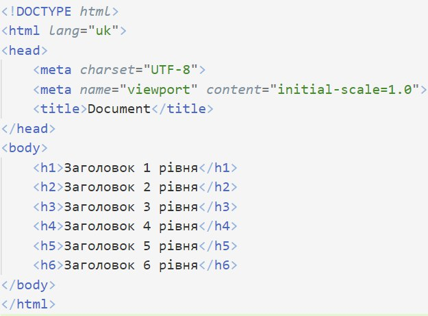
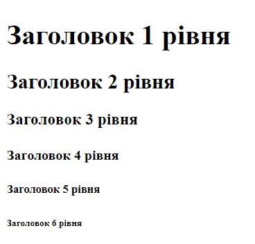

Що таке HTML?
Коли придумали Інтернет, виникло питання: за якими правилами відображати вміст сторінок, як передавати інформацію? Власне передачею займається HTTP, це поза темою мого сайту, але навіть коли є HTTP, сама сторінка, яка передається, може бути відображена по–різному. З'явилися браузери, і для розмітки, тобто інструкцій, як відображати вміст сторінок, використовувалися теги. Більшість тегів були подвійними — і те, що знаходилося між двома частинами певного тегу, відображалося і сприймалося браузерами так, як вказував цей тег. Тобто щоб вказати, наприклад, що починається заголовок сторінки, треба відкрити відповідний тег, вписати заголовок, і закрити тег. HTML — не мова програмування, вона не описує алгоритми і не працює з даними. Це мова розмітки. З часом з'являлися нові й нові браузери і кожен пропонував свої теги, свої правила читання HTML тексту. Це викликало проблеми сумісності, тобто кожну сторінку міг відображати тільки той браузер, для якого вона була написана, а якщо власник сайту хотів зробити його доступним для різних браузерів, він міг використовувати тільки обмежений список тегів. Через ці незручності було вирішено стандартизувати HTML. Цим займалися кілька організацій, серед них W3C — World Wide Web Consortium. Ця організація до сьогодні вважається "золотим стандартом" і пропонує валідатори HTML і CSS коду. Детальніше про них згодом.
Структура

Кожен HTML документ має структуру, яку зручно розглядати як граф дерево. Основним елементом (root) є елемент html. Він позначається відповідним тегом. Далі на HTML сторінці є елемент head. Він містить основну інформацію про HTML документ, як наприклад, якою мовою він написаний. Крім того, в head підключають CSS стилі і можуть також, наприклад, підключати шрифти. Ну а за head слідує елемент body – він містить всє, що є на сторінці. Тут вже використовуються всі інші теги і тут програміст проводить найбільше часу. Пам'ятайте, що теги в HTML не призначені для керування стилем сторінки. Такі теги як <h1> – <h6>, <strong>, <em> змінюють відображення тексту на сторінці, але основна їхня функція полягає в іншому. Семантика цих тегів полягає у виділенні важливих частин сторінки. Тобто якщо хтось шукає в Інтернеті за запитом "Що таке HTML?", він має багато шансів потрапити на цю сторніку, бо для заголовку "Що таке HTML?" я використав тег <h2>. Він, звісно, не такий впливовий, як <h1>, але все ж він має значення заголовка.
Теги
Тут не буду детально пояснювати кожен тег, лише наведу кілька найпопулярніших.
<h1> – <h6>
Ці теги відображають, як раніше зазначалося, заголовки. Створимо порожню сторінку і сробуємо:
 На зображенні коду видна структура сторінки, декілька поки не зрозумілих тегів, про які йтиметься згодом, і власне теги заголовків. Видно, як заголовки поступово зменшуються, зменшується і їхня важливість для пошуквого алгоритму, про що було написано вище.
Варто зазначити, що <head><title> вказана назва сторінки, яка відображається на вкладці браузера. В цьому випадку це назва за замовчуванням — Document. А зараз поговримо про інші теги.
<strong>
Цей тег виділяє текст жирним і збільшує його важливість.
<b>
Так само, як з попереднім, але не змінює важливості. Використовується тільки для стилізації.
<em>
Виділяє курсивом і збільшує важливість тексту.
<i>
Аналог <b> для курсиву.
Як раніше зазначалося, не всі теги подвійні. Є, наприклад, тег <a> для вставлення лінку. Є також <img> — для зображень. <br> — простий і часто використвуваний тег, переносить на новий рядок, також одинарний.
Атрибути
Теги можуть містити атрибути.
Це такі змінні з фіксованими назвами, які несуть інформацію про тег.
Наприклад, щоб підключити гіперпосилання (a.k.a. лінк) в тег
<a> між a і > встановлюється значення атрибуту
href, наприклад так: <a href="google.com">.
Лінкувати можна як інші сторінки, так і певний елемент
на тій самій сторінці — тій, з якою ми працюємо.
Для цього треба вказати цьому елементу атрибут id і
в лінку в href вставити знак '#' і значення цього id.
Можна також відкривати лінки в новій вкладці, присвоївши
атрибуту target тегу <a> значення _blank.
Подібно відбквається із вставкою зображень: <imh src="images/ball.png" alt="an image of a ball">. Про зображення є ціла окрема сторінка.
Атрибути також використовуються для виобру елементів в таблицях стилів, про них трохи пізніше.
Перевірка коду
W3C пропонує валідатори HTML i CSS коду.
Можна проводити валідацію за покликанням, завантажити файл, ну або
просто вставити текст скрипта.
лінк